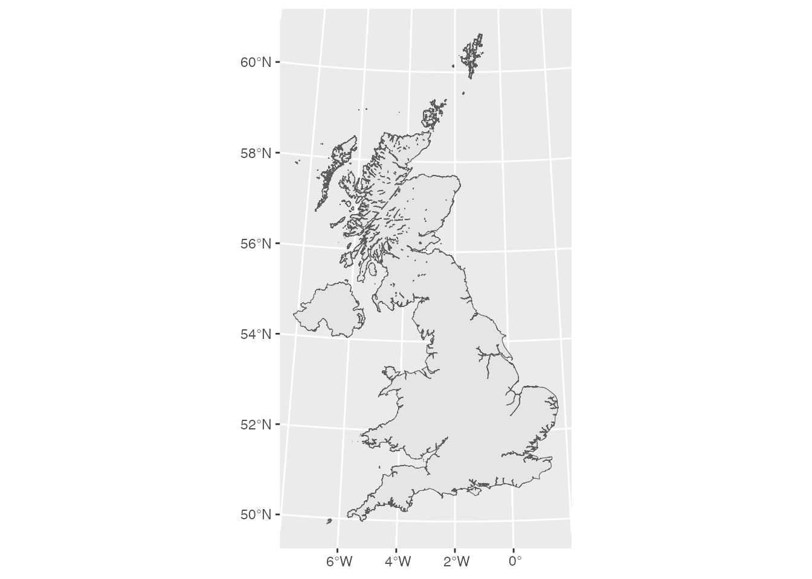

Until recently, most data science books didn’t have a section on geospatial data. It was considered a specialist form of research best left to GIS technicians who tended to use proprietary tools like ArcGIS. This has changed significantly in the past five years, but you’ll still be hard pressed to find an introduction to the subject which strays very far from a few simple data sets (mostly of the USA) and relatively uncomplicated geospatial operations. I actually first began learning R, back in 2013, right when open source geospatial research tools were beginning to be developed with quite a lot more energy and geospatial data is my personal favourite data science playground, so in this book we’re going to go much deeper than is usual. There are also good reasons to take things a few steps further in the particular forms of data and inquiry that religion takes us into.
Recommend https://r-spatial.org/book/
Geospatial data is, in the most basic form, working with maps. This means that most of your data can be a quite simple dataframe, e.g. just a list of names or categories associated with a set of X and Y coordinates. Once you have a set of items, however, things get interesting very quickly, as you can layer data sets on top of one another. We’re going to begin this chapter by developing a geolocated data set of churches in the UK. This information is readily and freely available online thanks to the UK Ordnance Survey, a quasi-governmental agency which maintains the various (now digital) maps of Britain. Lucky for us, the Ordnance Survey has an open data product that anyone can use!
Before we begin, there are some key things we should note about geospatial data. Geospatial data tends to fall into one of two kinds: points and polygons. Points can be any kind of feature: a house, a church, a pub, someone’s favourite ancient oak tree, or some kind of sacred relic. Polygons tend to be associated with wider areas, and as such can be used to describe large features, e.g. an Ocean, a local authority, or a mountain, or also demographic features, like a census Output Area with associated census summaries. Points are very simple data representations, an X and Y coordinate. Polygons are much more complex, often containing dozens or even thousands of points.
The most complex aspect of point data relates to the ways that coordinates are encoded, as they will aways need to be associated with a coordinate reference system (CRS) which describes how they are situated with respect to the planet earth. The most common CRS is the WGS, though for our data sets we’ll also come into contact with the BGS, a specifically British coordinate reference system. There are dozens of CRS, usually mapping onto a specific geographical region. Bearing in mind the way that you need to use a CRS to understand how coordinates can be associated with specific parts of the earth, you can see how this is a bit like survey data, where you also need a “codebook” to understand what the specific response values map onto, e.g. a “1” means “strongly agree” and so on. We also saw, in a previous chapter, how some forms of data have the codebook already baked into the factor data, simplifying the process of interpreting the data. In a similar way, some types of geospatial data sets can also come with CRS “baked in” while we’ll need to define CRS for other types. Here are some of the most common types of geospatial data files:
CSV: “comma separated values” a plain text file containing various coordinates Shapefile: a legacy file format, often still in use, but being replaced by others for a variety of good reasons. For more on this see [http://switchfromshapefile.org/] Geopackage: one of the more recent ways of packaging up geospatial data. Geopackages can contain a wide variety of different data and are easily portable. GeoJSON: a file format commonly used in other forms of coding, the “JSON” (an acronym for JavaScript Object Notation) is meant to be easily interchangeable across various platforms. GeoJSON is an augmented version of JSON data with coordinates added in.
Now that you have a sense of some of the basic aspects of geospatial data, let’s dive in and do a bit of learning in action.
5 Administrative shapes - the UK
A good starting point is to aquire some adminstrative data. This is a way of referring to political boundaries, whether country borders or those of a local authority or some other administrative unit. For our purposes, we’re going to import several different types of administrative boundary which will be used at different points in our visualisations below. It’s worth noting that the data we use here was prepared to support the 2011 census, and make use of the shapefile format.
here() starts at /Users/kidwellj/gits/hacking_religion_textbook/hacking_religion
# Download administrative boundaries for whole UK at country levelif (file.exists(here("data", "infuse_uk_2011_clipped.shp")) ==FALSE) {download.file("https://borders.ukdataservice.ac.uk/ukborders/easy_download/prebuilt/shape/infuse_uk_2011_clipped.zip", destfile ="data/infuse_uk_2011_clipped.zip")unzip("data/infuse_uk_2011_clipped.zip", exdir ="data")}uk_countries <-st_read(here("data", "infuse_uk_2011_clipped.shp"))
Reading layer `infuse_uk_2011_clipped' from data source
`/Users/kidwellj/gits/hacking_religion_textbook/hacking_religion/data/infuse_uk_2011_clipped.shp'
using driver `ESRI Shapefile'
Simple feature collection with 1 feature and 3 fields
Geometry type: MULTIPOLYGON
Dimension: XY
Bounding box: xmin: -69.1254 ymin: 5337.9 xmax: 655604.7 ymax: 1220302
Projected CRS: OSGB36 / British National Grid
# Download administrative boundaries for whole UK at regions levelif (file.exists(here("data", "infuse_rgn_2011_clipped.shp")) ==FALSE) {download.file("https://borders.ukdataservice.ac.uk/ukborders/easy_download/prebuilt/shape/infuse_rgn_2011_clipped.zip", destfile ="data/infuse_rgn_2011_clipped.zip")unzip("data/infuse_rgn_2011_clipped.zip", exdir ="data")}uk_rgn <-st_read(here("data", "infuse_rgn_2011_clipped.shp"))
Reading layer `infuse_rgn_2011_clipped' from data source
`/Users/kidwellj/gits/hacking_religion_textbook/hacking_religion/data/infuse_rgn_2011_clipped.shp'
using driver `ESRI Shapefile'
Simple feature collection with 9 features and 2 fields
Geometry type: MULTIPOLYGON
Dimension: XY
Bounding box: xmin: 82672 ymin: 5337.9 xmax: 655604.7 ymax: 657534.1
Projected CRS: OSGB36 / British National Grid
# Download administrative boundaries for whole UK at local authority levelif (file.exists(here("data", "infuse_dist_lyr_2011_clipped.shp")) ==FALSE) {download.file("https://borders.ukdataservice.ac.uk/ukborders/easy_download/prebuilt/shape/infuse_dist_lyr_2011_clipped.zip", destfile ="data/infuse_dist_lyr_2011_clipped.zip")unzip("data/infuse_dist_lyr_2011_clipped.zip", exdir ="data")}local_authorities <-st_read(here("data", "infuse_dist_lyr_2011_clipped.shp"))
Reading layer `infuse_dist_lyr_2011_clipped' from data source
`/Users/kidwellj/gits/hacking_religion_textbook/hacking_religion/data/infuse_dist_lyr_2011_clipped.shp'
using driver `ESRI Shapefile'
Simple feature collection with 404 features and 3 fields
Geometry type: MULTIPOLYGON
Dimension: XY
Bounding box: xmin: -69.1254 ymin: 5337.9 xmax: 655604.7 ymax: 1220302
Projected CRS: OSGB36 / British National Grid
# Download building outlines for whole UKif (file.exists(here("data", "infuse_dist_lyr_2011_simplified_100m_buildings_simplified.gpkg")) ==FALSE) {download.file("https://zenodo.org/record/6395804/files/infuse_dist_lyr_2011_simplified_100m_buildings_overlay_simplified.gpkg", destfile =here("data", "infuse_dist_lyr_2011_simplified_100m_buildings_simplified.gpkg"))}local_authorities_buildings_clip <-st_read(here("data", "infuse_dist_lyr_2011_simplified_100m_buildings_simplified.gpkg"))
Reading layer `infuse_dist_lyr_2011_simplified_100_buildings_overlay_simplified' from data source `/Users/kidwellj/gits/hacking_religion_textbook/hacking_religion/data/infuse_dist_lyr_2011_simplified_100m_buildings_simplified.gpkg'
using driver `GPKG'
Simple feature collection with 403 features and 0 fields
Geometry type: MULTIPOLYGON
Dimension: XY
Bounding box: xmin: -69.1254 ymin: 5524.797 xmax: 655986.4 ymax: 1219597
Projected CRS: OSGB36 / British National Grid
Before we move on, let’s plot a simple map and have a look at one of our administrative layers. We can use ggplot with a new type of shape geom_sf() to plot the contents of a geospatial data file with polygons which is loaded as a simplefeature in R.
ggplot(uk_countries) +geom_sf()

6 Load in Ordnance Survey OpenMap Points Data
# Note: for more advanced reproducible scripts which demonstrate how these data surces have been # obtained, see the companion cookbook here: https://github.com/kidwellj/hacking_religion_cookbook/blob/main/ordnance_survey.Ros_openmap_pow <-st_read(here("data", "os_openmap_pow.gpkg"))
Reading layer `os_openmap_pow' from data source
`/Users/kidwellj/gits/hacking_religion_textbook/hacking_religion/data/os_openmap_pow.gpkg'
using driver `GPKG'
Simple feature collection with 48759 features and 5 fields
Geometry type: POLYGON
Dimension: XY
Bounding box: xmin: 64594.12 ymin: 8287.54 xmax: 655238.1 ymax: 1214662
Projected CRS: OSGB36 / British National Grid
ggplot(os_openmap_pow) +geom_sf()
It’s worth noting that the way that you load geospatial data in R has changed quite dramatically since 2020 with the introduction of the simplefeature class in R. Much of the documentation you will come across “out there” will make reference to a set of functions which are now deprecated.
Let’s use that data we’ve just loaded to make our first map:
# Generate choropleth map of respondent locations# using temporary palette here so that 0s are whitelibrary(tmap) |>suppressPackageStartupMessages()# palette <- c(white, "#a8ddb5", "#43a2ca")map1 <-tm_shape(local_authorities) +# tm_fill(col = "surveys_count", , palette = palette, title = "Concentration of survey respondents") +tm_borders(alpha=.5, lwd=0.1) +# for intermediate polygon geometries# tm_shape(local_authorities) +# tm_borders(lwd=0.6) +# for dots from original dataset# tm_dots("red", size = .05, alpha = .4) +tm_scale_bar(position =c("right", "bottom")) +tm_style("gray") +tm_credits("Data: UK Data Service (OGL)\n& Jeremy H. Kidwell,\nGraphic is CC-by-SA 4.0", size =0.4, position =c("left", "bottom"),just =c("left", "bottom"),align ="left") +tm_layout(asp =NA,frame =FALSE, title ="Figure 1a", title.size = .7,legend.title.size = .7,inner.margins =c(0.1, 0.1, 0.05, 0.05) )map1
# save imagetmap_save(map1, here("figures", "map.png"), width=1920, height=1080, asp=0)
Map saved to /Users/kidwellj/gits/hacking_religion_textbook/hacking_religion/figures/map.png
Resolution: 1920 by 1080 pixels
Size: 6.4 by 3.6 inches (300 dpi)
# subsetting ordnance survey openmap data for measuring clusters and proximityos_openmap_important_buildings <-st_read(here("data", "os_openmap_important_buildings.gpkg"))
Reading layer `important_buildings' from data source
`/Users/kidwellj/gits/hacking_religion_textbook/hacking_religion/data/os_openmap_important_buildings.gpkg'
using driver `GPKG'
Simple feature collection with 229800 features and 5 fields
Geometry type: POLYGON
Dimension: XY
Bounding box: xmin: 64594.12 ymin: 8125.44 xmax: 655500.5 ymax: 1214662
Projected CRS: OSGB36 / British National Grid
# OSM data# Note: for more advanced reproducible scripts which demonstrate how these data surces have been # obtained, see the companion cookbook here: https://github.com/kidwellj/hacking_religion_cookbook/blob/main/ordnance_survey.R# osm_uk_points <- st_read(system.file(here("data", "pow_osm.gpkg", package = "spData")))# vector_filepath = system.file("data/osm-gb-2018Aug29_pow_osm.pbf", package = "sf")# osm_uk_points = st_read(vector_filepath)
Guides to geographies: https://rconsortium.github.io/censusguide/ https://ocsi.uk/2019/03/18/lsoas-leps-and-lookups-a-beginners-guide-to-statistical-geographies/
Extact places of worship from Ordnance survey open data set Calculate proximity to pubs